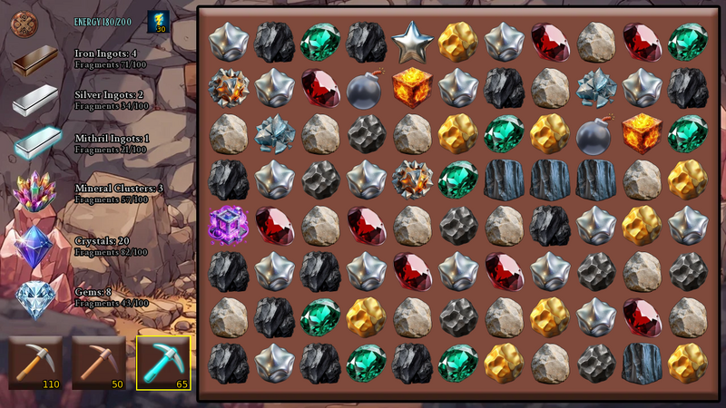
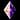
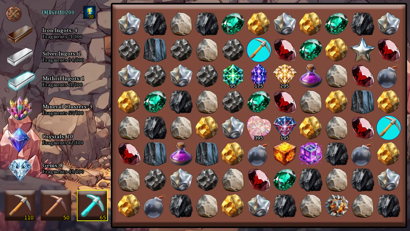

Player wiki noticeThis community-maintained page may contain gameplay, story, and mature-content spoilers.
# 采矿系统 -- -- 完整指南
矿山迷你游戏是一款匹配和刻板的拼图游戏,在8×11网格的岩石、宝石和矿石上摆动采摘轴。 资源瓦片给出了6种资源之一的碎片,将合适的瓷砖连在一起会形成爆炸性级联,在一次点击中可以摧毁半块板。通过三只采摘轴,每只采摘轴在废墟中表现不同和稀有的关键物品,采矿是Chronoromancer中资源最丰富的活动之一。
这个指南涵盖了所有的东西: 如何开始,三只小斧子和它们做什么,每个瓦片类型和它给你什么, 级联和链反应系统, 关键物品石头, 在哪里找到更多的小斧子 矿场本身。
快速启动

这是 山脚山采矿Gem 单独传授的采矿技能被用于挖掘地牢墙壁,不需要玩这个谜题。
要开始开采,你需要两样东西:
- 至少一个腌焦 任何种类的库存(新游戏开始为 1 铁皮克斯)
- 至少30个输入能量,然后每次摆动至少10个能量
前往 山脚山 在中世纪时期(乡村地区), 采矿 动作,小型游戏立即开启。每次输入需要30分钟和30个能量。至少带来 40 能源 以输入并立即切换,或者在输入后使用能量项。如果您有零切除轴,则动作会灰化。
每一次点击都会点击一块。每一次点击会花费你所选的比克克斯和10个能量。岩石会碎裂,宝石会闪烁,你收集碎片,朝向六个不同的硬币和宝石。
地点
山脚山(中世纪外裙)
通往山脚的路也能找到 Gem, 早上7点到5点住在这里的矮人矿工。采矿本身没有时间限制,你可以随时挥动你的小斧头。
Gem还出售 5个铁 pick 每天200美元,作为这里的购物行动。如果你在铁上干燥,这就是你可靠的来源。
三只皮克丝
你从铁 pick开始,通过玩游戏赢得其他人,每个人都有不同的角色.
铁皮克斯( 默认)
基本皮卡和面包和面包。每击一击就击出任何普通的瓦片。 无法打破基岩或玻璃立方体 。
- 强度 : 1
- 特别: 无
- 最佳服务: 每天开采、打碎基本岩石和宝石、触发级联
黄铜
强于铁, 关键是, 除了能打破基岩的钻石之外,只有小黄牛.
- 强度 : 2(每个成功的秋千交易2项损害)
- 特别: 一次击破基岩
- 最佳服务: 当它挡住一个好的阶梯时 清理基岩 更快地完成坚硬的多重瓦片
钻石采摘
溢价工具每挥一挥就损坏严重 打破任何东西 永远 每次点击时都会在随机相邻的瓷砖上触发奖金。
- 强度 : 5(每个成功的摇摆处理5个损坏;石头和加固仍需要大量损坏)
- 特别: 一次击破基岩和玻璃立方体
- 奖金: 每点击一次也会损坏一个随机相邻的瓦片(周围的8块瓦片中的任何一块,包括对角板),以表示完整的5个损坏. 奖金不会消耗额外的皮克斯——这是免费的.
- 最佳服务: 像玫瑰宝石、王后石和稀有的钥匙宝石这样的坚硬的多重瓦片,同样令人惊叹的是,因为奖金被击中会连锁成火柴。
奖金是钻石的签名动作。如果你的奖金在电量上升时击中土地,那么电量上升就会立即触发。如果它落在基岩或玻璃上,它们也会被摧毁。
在它们之间切换
您从采矿屏幕左下方的三个方块中选择您正在使用的 pickax。 选中的 pickax 周围有黄色的边框 。一个已耗尽的 pickax 将变成灰色,不能被选中 。
在任意两次点击之间可以切换拾轴——互换会间没有罚.
采矿会议如何运作
可接受的周转费 选取的 Pickaxe 和 10 个能量。在动画期间点击,使用一个空的选定工具,低于 10 Energy,或者用不合适的工具在基岩/玻璃上点击,则一无所获,一无所获。这种摇摆造成的火柴和电动链没有增加工具或能源。
单击瓷砖时:
- 所选的拾轴器损失1个电荷.
- 你失去了10个能量。
- pick (动画在点击的瓷砖上播放,如果使用钻石则在奖金瓦上播放).
- 瓦片会损坏 等于你的皮克赛力,如果它断了,你就得到它的报酬。
- 地板倒下来 以填补空白(重力),并在顶部产生新的瓦片。
- 匹配的游戏检查 ——3+等位基本瓦片的线断合:岩石,黄金,金属,煤炭,翡翠,红宝石,或铁. 稀有的高HP瓦片不形成普通的匹配线.
- 连锁店还在继续 只要新的火柴在重力后继续形成
一次点击有时可以触发巨大的链条—— 重力填充,新的匹配表,匹配破坏邻居,这些邻居包括一个爆炸的电源,爆炸能清除更多的瓦片,重力,另一个匹配等等。这是采矿真正有趣的地方。
当您点击左上角的X 、按 ESC 或按 Space 时会结束一个会话。您收集的碎片、 全部资源、 剩下的小斧、 获得的石头、 以及授予的石头水平 。 董事会和访问特定发现进展不会进入下一次访问 。
采矿屏幕
顶边栏
- X 关闭按钮 (左上方)——随时退出会话.
- 能源X/Y 你目前的能量与你的最大能量对比
- 能源资源图标 ——可点击以花费您存储的能量项目之一, 恢复 25 个能量(或者如果您有 Willow 增强愈合 。 旁边的数字显示您还剩多少 。
左侧
六行显示每个资源的当前总数 :
- 铁齿:X ——碎片X/100
- 银锭:X ——碎片X/100
- 米斯里尔内戈茨:X ——碎片X/100
- 矿物集群:X ——碎片X/100
- 晶体:X ——碎片X/100
- 宝石:X ——碎片X/100
每100片片段会翻转到整个资源的+1。分数计数器重排为0(或者剩余部分,如果一个中超过100个的话)。
左下边
三个选手,左边是铁,中间是铜,右边是钻石,选手有一个黄色的边框,每个号码显示你有多少收费。
右侧
动作发生地的 8×11 网格。多重击的瓦片在损坏后显示一个小的 HP 剩余编号。 网格已存在 8行和11列(88个职位).
砖瓦类型和奖励
电网可以产卵 33瓦类型: 22 个普通团体喷出的瓦片, 基岩, 7个稀有的密钥石块, 和3个灵魂石增强瓦片。 增强瓦片需要拥有至少5个不同的灵魂石块。以下是完整的清单, 以及每块在消耗时给出的东西。
矿物/岩石型平面
| 平铺 | 汉字 | 奖励 |
|---|---|---|
| 摇滚 | 1 | 1片:50%铁片,40%银片,10%铁片 |
| 铁矿石 | 1 | +1 铁片, 1 随机其他资源的10%机会 |
| 黄金 | 1 | +1 铁,+1 银, 10% 机会 1 随机其他 |
| 煤炭 | 1 | +1 铁, 15% 1 毫升, 10% 1 宝石 |
| 金属 | 3 | 3片,每片随机选择在铁/银/米色之间 |
| 金属星 | 3 | +2 铁,+2 银,+2 咪唑,+1 随机的团/晶/宝石 |
| 金属碎片 | 8 | +1 铁,+1 银,+1 毫升 |
| 熔化 | 5 | +2 铁,+1 银,+1 咪唑,40%的机会 1 随机的组/晶/宝石 |
| 贝德洛克 | 特别 | 2个片段,每个片段在所有6个资源中独立随机 |
贝德罗克不可能被铁(只有铜或金刚石)打破,其中四块在每次会议开始时都产卵作为障碍物。在重力填充过程中,新的瓦片有很小的1.5%的机会重生基岩,而目前板上只有不到四块基岩瓦。
Gem- 类型图案
| 平铺 | 汉字 | 奖励 |
|---|---|---|
| 翡翠 | 1 | +1 组, 40% 的一次随机晶体/ 宝石机会 |
| 鲁比 | 1 | +2 组, 20% 的一次随机晶体/ 宝石概率 |
| 彩虹 Gem | 15 | +3 集群,+1 晶体,+1 宝石 |
| 罗斯 Gem | 30 | 6个资源中+1个 |
| 狂欢 | 25 | 6个资源中+2个 |
狂欢和玫瑰宝石是大奖牌——同时摧毁一块资源。
晶体型梯子( Panthers)
| 平铺 | 汉字 | 奖励 |
|---|---|---|
| 绿豹 | 10 | 3个片段,每个片段随机来自集群/晶体/宝石 |
| 蓝豹 | 10 | 3个片段,每个片段随机来自集群/晶体/宝石 |
| 粉红豹 | 10 | 3个片段,每个片段随机来自集群/晶体/宝石 |
所有三块豹式瓷砖在功能上都是相同的奖励——只有视觉不同.
特殊图案
| 平铺 | 汉字 | 奖励 |
|---|---|---|
| 能源 | 1 | +40 能量( 上限为最大) |
| 修理 | 1 | +3 以你用来打破的比克轴为单位 |
能量的瓦片非常宝贵——在你的点击成本达到10个能量后,+30能量的净收益。修理瓦片是被动地补充你的拾轴器中段的唯一方法之一。
升电梯
| 平铺 | 效果 |
|---|---|
| 炸弹 | 3×3炸弹爆炸 |
| 防火墙 | 摧毁整行 |
| 魔法立方体 | 销毁整个列 |
电顶本身没有奖赏,但被爆破摧毁的瓷砖都给了他们正常的奖赏。 电顶在另一个受电顶影响的地区触发器内部的奖赏在同一条链条上。 基本瓷砖立即断裂;高HP瓷砖只遭受15次破坏,只有在被摧毁时才给予奖赏。 贝德洛克和玻璃没有受到影响。
不可损坏的平面
| 平铺 | 页:1 |
|---|---|
| 玻璃立方体 | 只有金刚石小斧才能打破它 |
| 贝德洛克 | 只有铜或钻石才能打破它 |
六资源
所有采矿都奖励进入6个资源池的漏斗,每个漏斗被作为碎片(0-99)和整体跟踪:
- 铁块 - 基本工艺金属
- 银锭 中层金属
- 密斯里尔内戈茨 - 贵金属
- 矿物集群 集中矿物质
- 晶体 ——魔法资源(也输入您的主要目录).
- 宝石 ——高额魔法资源(也输入您的主要库存).
任何资源的100个片段 = +1 整个该资源. 晶体和宝石立即出现在您的主要库存中。 四个内置/ 集群类型在“ 矿产品” 库存屏幕中存储 。
叠加匹配
每次成功点击后,引力会下降瓦片以填充空格,并在顶部产生新的瓦片。然后游戏扫描 3 个或更多相同基本牌的直线,只有水平或垂直——对角不计数.
如果找到匹配 :
- 所有匹配的瓷砖都被消耗(每块都得到奖励)
- 垂直相邻的瓦片(上,下,左,或右)根据匹配大小进行损坏:
- 3 个比对 : 相邻多块瓦片5处损坏
- 4对: 10个损坏,以及相邻的修理/能源瓦也被消耗
- 5+ 匹配 : 25项损坏、修理/能源仍在消耗
- 爆炸区相邻的电源被触发,引发连锁反应
- 万事俱备后,重力再次运行,再进行一次匹配检查——级联可以无限连锁.
注意 相匹配的损坏只击中 多重击的牌 (带有HP的),修理/能量瓦(仅在4+火柴上),以及 供电 (总是被触发的)它不会消耗岩石,金,煤等基本瓷砖——这些瓷砖只从直接点击中断裂,或者在匹配线本身中.
野生岩石
一旦你的级联到达它 第三轮及以后,一个特别的规则踢入: 石头变得狂野.
如果岩石砖至少有一个邻居(在周围8块瓷砖中的任何一块)在同一个级联链中被消耗,那么岩石砖就成为一种野生替代品。 煤、铁或金属 用于形成匹配线.
因此在深层级联中,岩石-煤层,岩石-铁层-铁层,或者煤层-石层-煤层-煤层等线路都可以匹配——只要岩石紧邻最近破碎的瓦片.
这让深层级联变得如此具有爆炸性。随着更多的瓦片碎裂,更多的岩石变得野性,从而产生更多的火柴,消耗更多的瓦片,使更多的岩石变得野性。一旦开始长链,它就会继续运行。
纯粹的摇滚摇滚线仍然与正常的摇滚匹配(不需要野生逻辑). 与非WILD_MATCHABLE 基础如金,翡翠,或红宝石等的线不接受野生岩石——它们必须精确匹配.
当您的整个级联完成时, 狂野状态会重现;在下一次点击时,它会从深度 1 开始 。
电源提升
这三块电动瓦是你们进入大型级联的门票,可以触发三种方式:
- 直接点击 - 花费你的皮克克斯充电和10个能量作为正常
- 钻石奖金 ——你的钻石相邻的随机撞击可以降落在电源上
- 连带联系 ——当电源顶端的匹配形成时,电源顶端自动起火(免费)
当触发时,一个电源在前方计算出其全链反应,然后播放动画。如果爆炸区击中了另一个电源,那么一个电源也会触发——等等,都是在一次计算中。一个炸弹在火块旁边的魔法立方体旁边就可以用一击就能清除半块板。
炸弹
3×3爆炸以炸弹为中心,击中炸弹本身加上周围的8块瓦片.
深级奖金 : 如果在你的级联深度3或更高时触发炸弹(与激活野生岩石的门槛相同),炸弹的爆炸也会摧毁 板上每块煤砖每一个煤仍然给予正常的回报,留下的缺口可以形成新的火柴,任何与被破坏的煤瓦相邻的电源也都会被触发——有时会导致真正的板清除链.
防火墙
摧毁同一行的每一块瓷砖。
魔法立方体
摧毁同一列的每一块瓷砖。
什么样的电源链摧毁
电动链对爆炸中的每块瓦片都有影响,除非 基岩和玻璃立方体 多击打的瓦片每爆破15块,如果减到0块HP,则破碎。基本瓦片、其他功率提升、修理和能量立即消耗。关键项目石块和灵魂石加固是高HP瓦片: 在计算出的链条中每个受影响位置造成15次损害,包括重叠的爆炸区域, 并且只有在HP达到零时才给予奖励。
关键项目石头
7个稀有而强大的 关键项目块 在开采过程中可以产卵。每个都是一种独特的关键项目,会进入您的永久收藏。 200 HP (韩语)昆斯通和爱瑟斯通 400 HP 调试,使得它们很难破解——钻石腌制被高度推荐.
七颗矿石:
- 皇后石镇
- 剑石
- 野蛮石
- 平衡块
- 元素石头

light石- 以太石头
后继规则
- 每本普通的组代卷都有 0.013% 键盘 ưμ㼯A
- 有一次七只产卵 在您的会话中,在您退出并重新进入游戏前, 无法出现其他密钥 。
- 已经拥有的石头再也不会产卵了 ——一旦有了它,就永久过滤出来.
- 如果七颗矿石都归你所有 关键石块就产不出来
当一个关键石头被消耗时,它被添加到您的关键物品列表和一个庆祝的鸣乐游戏中,所有7个开采的石头都可以升级,并在首次获得时从一级开始.
打破它们的战略
200 HP是一大堆。用钻石皮卡(强力5),40个直接点击量——但可以通过:
- 用电链把石头砸到15处
- 钻石奖金可以击碎一块石头,同时点击邻居的瓷砖。它总是针对不同的位置,因此它不能在一次秋千中两次击中同样的石头。
- 4+火柴与石牌交易相邻 10–25 损坏每火柴
- 铁和铜还在工作,只是慢得多
如果一个石头产卵,而你 低的钻石收费, 切换到铁或铜 芯片在它的同时,你节省钻石为致命的打击。
灵魂石头增强

一旦你拥有 5个或更多不同的灵魂石,采矿可以另外产生三块加固瓦. 所有权计有皇后石,剑石,布鲁特石,平衡石,元素石,暮光石,以太石,以及 幽灵石幽灵石帮助满足大门,并可以获得增强水平,尽管它不是从采矿中新获得的七颗宝石之一.
| 增强 | 外观 | 开始 HP | 职等加薪共计 | 普通群体发芽机会 |
|---|---|---|---|---|
| 小点 | 绿色面额石头 | 100 | 5 | 0.35% |
| 中型 | 紫色面额石头 | 180 | 10 | 0.125% |
| 大块 | 金色面额石头 | 300 | 20 | 0.025% |
这些机会适用于每个合格的普通组生成卷。它们共占0.5%;重量来自一个产卵组中的普通岩石,另一个产卵组中的黄金。访问的初始板上也可以包含所有制门的增强。
如何授予增强级别
你必须 打破瓦片, 不仅仅是揭示它。它的5, 10, 或20个增量都随机分配给一个目前拥有的 Soul Stone 。这是一个共享的总数, 而不是每个石头的多个级别。 几个增量可能流向同一个石头;没有选择接受者。
例如,一个小瓦片可以将它的五个等级分配为皇后石+2,剑石+1和幽灵石+2.这是一个例子分配,而不是固定的奖励.一个拥有的零/未初始化等级的石块,在增加其授予的增量之前至少作为一级处理.
直接命中, 钻石奖金命中, 相邻的匹配损害, 以及电源提升损害 全部工作. 铁/ 科珀/ 钻石交易 1/2/5 直接损坏; 相邻的匹配交易 5/ 10/ 25; 电源提升链交易 15 个受影响的瓦片。当瓦片破裂并持续在石块主游戏级别上时, 奖励承诺一次 。
单独的60翼增强保障
- 至少拥有5块石头, 已接受的有酬摇摆 数向增强的发现。拒绝点击和自由级联命中不算。
- 任何显示增强的瓦片都会重置“自最后找到”计数器,甚至在你打破该瓦片之前。
- 之后 60个没有找到的有薪秋千,游戏队列会保证增强: 70%小,25% 中,5%大.
- 排队的瓷砖取 下一次填充位置,在普通的瓦片或基岩之前。只损坏耐用瓦片的撞击可能不会留下空隙,所以排队的增强会等待到瓦片碎裂和板子重新填充。
- 没有单人增强访问限制,在出现增强后,计数器重新开始,普通增强卷继续.
这保证了出现瓦片,而不是挥杆60的自动等级奖励。它独立于下面的旧的键盘/意想不到的可怜系统。在退出时,板子、未破损的加固、排队的瓦片和发现计数器被丢弃;已经授予的石位仍然存在。
可惜的计时器
为了防止稀有物品发疯,游戏有 可怜计时器:
之后 60个已接受的带薪周转 在一次访问中,每组一代的滚动检查a 3%的机会 如果这次访问没有关键石头产生,那么候选人就是仍未拥有的矿石,如果没有关键石头出现的话,则加上Iridescent。每个候选人的瓦片同样可能出现,因此这两类钻石不一定是50/50的分割。
关键石头的外观会进一步使这次访问的钥匙石头产卵失去功能,但是Iridescent 怜悯会继续下去。 iridescent的外观会使其怜悯候选人丧失功能,但关键石头的怜悯会继续下去。当两者出现时,怜悯就会停止。 普通的Iridescent卷仍然会发生。如果所有7个矿石都拥有,怜悯池只能包含Iridescent。
这是60次秋千后的机会增加 秋千60块没有保证。它与保证的增强系统分开运行。幸运Potion Retries可以帮助支持的碎片-骨卷和3%的稀薄度检查;它们不会增加每个普通的瓦片重量或保证一个特定的石头。屏幕显示成功的重试是“幸运重试获胜 ” 。
因此,如果你已经开采了一段时间,没有看到什么特别的东西, 可怜的计时器会踢进去,并大大提高你的概率。每一次你重新进入小型游戏时,点击的60个计数器会重新显示。
获取更多选手
你会很快被烧穿的,这里是如何恢复:
从Gem购买
- 山脚山,而Gem则在场(上午7时至下午5时)
- 铁叉(X5) 动作:200美元,10分钟
- 每场比赛一天一次
Pickaxe Haul (支持访问)
随着全版和更高功率接入要求的满足,Gem还提供了一套溢价:贸易 1个晶体 (单位:千美元) 10枚铁+10枚铜+10枚钻石 (15分钟,+2Gem关系),没有每日的限制——如果你有多余的晶体,这是迄今为止储存铜和钻石充电最快的方法.
战斗投篮( 敦格昂)
普通的地牢战役奖励卷有 15%的基本机会 奖励 : 1–20 层的铁, 21–30 层的铜, 31–40 层的钻石, 以及41–45 层的随机之一。 适用的降级奖金可以增加这一机会。 Minotaur 奖励可以将这种降级替换为皮革; 特殊的无穷敌人可以使用单独的降级池。请检查战斗奖励信息中你得到的奖励信息 。
希斯(犹太公会)
成功抢劫后, 10%的卷数 或来自诺贝尔区的一个钻石皮克赛
搜索对接
那个 中世纪后端 Alley 搜索动作 有个小机会可以找到一个皮卡克斯的藏品。
- 2 - 5 铁 pick
- 2 - 4 铜拾轴
- 根据你的运气统计(Luck检查过,那么高的运气=更好的概率) 来抽取钻石的奖金
修补平面( 矿井本身)
打破一个修补的瓦片会给你+3 任何你用过的皮革。这是铁上有意义的网正值(1点击,3回),这也是级联链条如此有价值的原因之一——如果修补的瓦片被夹在级联里,你就能免费得到皮革。
硬顶
最多可以持有 999种,每类任何多余的都被丢弃,在储存之前先花掉
提示和战略
输入前
- 库存能源 ——每一次点击都花费10个能量,所以一个带100个能量的会话,在能量瓷砖变得临界之前,会给你大约10个点击. 迷你游戏中的能量项目将每次使用25-50个能量恢复.
- 至少吃一个小牛排 。如果选中的工具是空的,请在输入后选中工具并切换。
- 瞄准新鲜的全能棒 如果你可以的话 中场比赛的失败令人沮丧
会议期间
- 点击前查看级联 。 如果您能打破一个会导致 4+ 匹配的瓦片,请通过随机点击。 匹配的损坏链和奖金会快速增加 。
- 保存钻石的动力提升,多重瓦,和关键宝石。 当铁会做同样的工作时,不要浪费钻石在基本岩石上收费.
- 用铜来清除基岩障碍 Bedrock 分离了匹配的瓦片;当下面的缺口打开时它会与柱子相撞。 新的基岩可以在长会话中重生,因此在开始的岩石消失后铜仍然有用 。
- 能量瓦是你的朋友。 每个能量瓦破碎是+30净能量(40恢复减去你点击的10个),当它们出现时优先使用。
- 功率提升附加是最高值的游戏. 如果你可以通过配对旁边的瓷砖来触发电动(因此链子可以免费触发电动),那么你就在不花费费用的情况下获得电动激活.
长会和可怜时间
- 一旦拥有五块石头,就带去足够的能量和拾轴,在退出前完成加固瓦片。一个大瓦片有300 HP; 附近的火柴和电源可以减少所需的直接摆动数量。
- 自然增强的外观重新启动了它的60个旋翼保证。 发现一个瓦片并收取奖励是不同的步骤。
- 60点击可怜计时器意味着承诺的玩家会相对经常看到稀有项目. 计划至少60+点击的会话,如果您正在猎取关键石头或意想不到的话.
- 在一个会话中产出一个钥匙石或ridescent后,这个会话的可怜计时器是"spent"——你还可以为另一个会话(keystone vs iridescent),但在同一跑道中却无法获得第二个钥匙石.
资源战略
- 密斯里尔是四个基本硬币中最罕见的. 它只是作为小机会从煤炭,金属/摩尔腾/metal_star的随机池,以及10%从岩石中落下.
- 黄金是可靠的银源,但是Metal, Rock, Metal Flagments, Molten, and Metal Star 也可以提供它.两个瓦片组在正常的再填充时都出现.
- 集群、晶体和宝石碎片大多来自宝石、豹和彩虹/玫瑰/稀释。 这些瓷砖比基本矿物稀有,因此晶体和宝石碎片的积累较慢.
不要忘记退出
迷你游戏没有胜负条件或自动退出。它会一直运行到你决定离开。如果你已经清理了你想要的一切,只需按X、ESC或Space即可返回世界。
共同问题
- 为什么矿业会灰化? 请检查access-date=中的日期值 (帮助) 30能源输入成本和你的皮卡克斯总库存.
- 为什么我能进去却不能摇摆? 条目花费30能源;每次秋千仍需要另外10个,并需要一个非空的选定工具.
- 为什么我的爆炸没有摧毁一块石头? 关键石块和增强物保留HP,每计算出一个电量上升链就承受15个损坏.
- 60 点击后为什么不增强 ? 您需要五个不同的拥有的石头;只有接受的付费摇摆。 自然发现重启计数器, 排队的保证需要一个重新填充的位置 。
- 为什么只有几块石头会增加? 增强水平从一个共享池中随机分布.
- 我可以离开 完成这个板以后? 离开清理板并访问进度。在离开前收集稀有的瓦片奖励 。
准确性说明
根据当前开采逻辑、屏幕、动作条目、Gem的店铺、库存转换和灵魂石增强码重新检查 2026年10月4日 (中文(简体) ).。屏幕截图使用带有示例平衡和平板位置的本地游戏菜单。平板表格中的所有奖励数量都是 碎片,除非明确描述为能量, pick,关键物品,或石质水平.
相关页面
# Mining System - Complete Guide
The Mining minigame is a match-and-cascade puzzle game where you swing pickaxes at an 8×11 grid of rocks, gems, and ores. Resource tiles give fragments of one of six resources, and chaining the right tiles together creates explosive cascades that can destroy half the board in a single click. With three pickaxes that each behave differently and rare key items hidden in the rubble, mining is one of the most resource-rich activities in Chronoromancer.
This guide covers everything: how to start, the three pickaxes and what they do, every tile type and what it gives you, the cascade and chain-reaction system, key item stones, and where to find more pickaxes outside of mining itself.
Quick Start
This is the Mountain Foothills Mining minigame. Gem’s separately taught Mining skill is used to mine dungeon walls and is not required to play this puzzle.
To start mining you need exactly two things:
- At least one pickaxe of any kind in your inventory (new games start with 1 iron pickaxe)
- At least 30 Energy for entry, then at least 10 Energy for each swing
Travel to the Mountain Foothills in the Medieval era (Village Outskirts district) and use the Mining action. The minigame opens immediately. Each entry costs 30 in-game minutes and 30 Energy. Bring at least 40 Energy to enter and immediately make one swing, or use an Energy item after entry. If you have zero pickaxes, the action will be greyed out.
Tiles are clicked one at a time. Every click costs 1 of your selected pickaxe and 10 energy. Rocks break, gems sparkle, and you collect fragments toward six different ingots and gems.
Locations
Mountain Foothills (Medieval Outskirts)
The only location where you can mine. The path to the foothills is also where you'll find Gem, the dwarven miner who lives here from 7 AM to 5 PM. Mining itself doesn't have a time restriction — you can swing your pickaxe at any hour of any day.
Gem also sells bundles of 5 iron pickaxes for $200, once per day, as a shopping action at this location. If you ever run dry on iron, this is your reliable source.
The Three Pickaxes
You start with the iron pickaxe and earn the others through play. Each one has a different role.
Iron Pickaxe (default)
The basic pickaxe and your bread-and-butter. Hits any normal tile for 1 damage per click. Cannot break bedrock or glass cubes.
- Strength: 1
- Special: None
- Best for: Everyday mining, breaking basic rocks and gems, triggering cascades
Copper Pickaxe
Stronger than iron, and crucially, the only pickaxe besides diamond that can break bedrock.
- Strength: 2 (each successful swing deals 2 damage)
- Special: Breaks bedrock in one click
- Best for: Clearing bedrock when it's blocking a good cascade, finishing tough multi-hit tiles faster
Diamond Pickaxe
The premium tool. High damage per swing, breaks anything, and always triggers a bonus hit on a random adjacent tile every time you click.
- Strength: 5 (each successful swing deals 5 damage; stones and enhancements still need substantial damage)
- Special: Breaks both bedrock and glass cubes in one click
- Bonus hit: Every click also damages a random adjacent tile (any of the 8 surrounding tiles, including diagonals) for full 5 damage. The bonus does NOT consume an extra pickaxe — it's free.
- Best for: Tough multi-hit tiles like rose gem, queenstone, and the rare key item stones. Also amazing for cleanup since the bonus hit can chain into matches.
The bonus hit is the diamond's signature move. If your bonus hit lands on a power-up, that power-up triggers immediately. If it lands on bedrock or glass, those are destroyed too.
Switching Between Them
You select your active pickaxe from the three squares at the bottom-left of the mining screen. The selected pickaxe has a yellow border around it. A pickaxe that has run out of charges goes grey and can't be selected.
You can switch pickaxes between any two clicks — there's no penalty for swapping mid-session.
How a Mining Session Works
An accepted swing costs one selected pickaxe and 10 Energy, even if the target survives. Clicking during animations, with an empty selected tool, below 10 Energy, or on bedrock/glass with an unsuitable tool does nothing and spends nothing. Matches and power-up chains caused by that swing cost no additional tools or Energy.
When you click a tile:
- The selected pickaxe loses 1 charge.
- You lose 10 energy.
- Your pickaxe swings (animation plays on the clicked tile, and on the bonus tile if you're using diamond).
- The tile takes damage equal to your pickaxe's strength. If it breaks, you get its rewards.
- Tiles fall down to fill the gaps (gravity), and new tiles spawn at the top.
- The game checks for matches — lines of 3+ identical basic tiles break together: rock, gold, metal, coal, emerald, ruby, or iron. Rare high-HP tiles do not form ordinary match lines.
- Cascades continue as long as new matches keep forming after gravity.
A single click can sometimes trigger an enormous chain — gravity refills, a new match forms, that match damages neighbors, those neighbors include a power-up that explodes, the explosion clears more tiles, gravity again, another match, and so on. This is where mining gets genuinely fun.
A session ends when you click the X at the top-left, press ESC, or press Space. Your collected fragments, whole resources, remaining pickaxes, acquired stones, and awarded stone levels remain. The board and visit-specific discovery progress do not carry into the next visit.
The Mining Screen
Top Bar
- X close button (top left) — exits the session at any time.
- ENERGY X/Y — your current energy versus your maximum.
- Energy resource icon — clickable to spend one of your stored energy items, restoring 25 energy (or 50 if you have Willow's Enhanced Healing). The number next to it shows how many you have left.
Left Side
Six rows showing your current totals for each resource:
- Iron Ingots: X — Fragments X/100
- Silver Ingots: X — Fragments X/100
- Mithril Ingots: X — Fragments X/100
- Mineral Clusters: X — Fragments X/100
- Crystals: X — Fragments X/100
- Gems: X — Fragments X/100
Every 100 fragments rolls over into +1 of the whole resource. The fraction counter resets to 0 (or to the leftover, if you got more than 100 in one go).
Bottom Left
The three pickaxe selectors. Iron on the left, copper in the middle, diamond on the right. The selected one has a yellow border. The number on each shows how many charges you have.
Right Side
The 8×11 grid where the action happens. Multi-hit tiles show a small remaining-HP number after they have taken damage. The grid has 8 rows and 11 columns (88 positions).
Tile Types and Rewards
The current grid can spawn 33 tile types: 22 regular group-spawned tiles, bedrock, seven rare key item stones, and three Soul Stone enhancement tiles. Enhancement tiles require ownership of at least five distinct Soul Stones. Here's the full list and what each one gives when consumed.
Mineral / Rock-type Tiles
| Tile | HP | Reward |
|---|---|---|
| Rock | 1 | 1 fragment: 50% iron, 40% silver, 10% mithril |
| Iron Ore | 1 | +1 iron fragment, 10% chance of 1 random other resource |
| Gold | 1 | +1 iron, +1 silver, 10% chance of 1 random other |
| Coal | 1 | +1 iron, 15% chance of 1 mithril, 10% chance of 1 gem |
| Metal | 3 | 3 fragments, each randomly chosen between iron / silver / mithril |
| Metal Star | 3 | +2 iron, +2 silver, +2 mithril, +1 random of cluster / crystal / gem |
| Metal Fragments | 8 | +1 iron, +1 silver, +1 mithril |
| Molten | 5 | +2 iron, +1 silver, +1 mithril, 40% chance of 1 random of cluster / crystal / gem |
| Bedrock | special | 2 fragments, each independently random across all 6 resources |
Bedrock cannot be broken by iron — only copper or diamond — and four of them spawn at the start of every session as obstacles. During gravity refill, new tiles have a small 1.5% chance to respawn bedrock while fewer than four bedrock tiles are currently on the board.
Gem-type Tiles
| Tile | HP | Reward |
|---|---|---|
| Emerald | 1 | +1 cluster, 40% chance of 1 random of crystal / gem |
| Ruby | 1 | +2 cluster, 20% chance of 1 random of crystal / gem |
| Rainbow Gem | 15 | +3 cluster, +1 crystal, +1 gem |
| Rose Gem | 30 | +1 of all 6 resources |
| Iridescent | 25 | +2 of all 6 resources |
Iridescent and rose gem are the jackpot tiles — destroying one gives a chunk of every resource simultaneously.
Crystal-type Tiles (Panthers)
| Tile | HP | Reward |
|---|---|---|
| Panther Green | 10 | 3 fragments, each random from cluster / crystal / gem |
| Panther Blue | 10 | 3 fragments, each random from cluster / crystal / gem |
| Panther Pink | 10 | 3 fragments, each random from cluster / crystal / gem |
All three panther tiles are functionally identical for rewards — only the visuals differ.
Special Tiles
| Tile | HP | Reward |
|---|---|---|
| Energy | 1 | +40 energy (capped at your max) |
| Repair | 1 | +3 of whichever pickaxe you used to break it |
The energy tile is hugely valuable — net gain of +30 energy after the 10 energy your click cost. The repair tile is one of the only ways to passively replenish your pickaxes mid-session.
Power-Up Tiles
| Tile | Effect |
|---|---|
| Bomb | 3×3 explosion centered on the bomb |
| Fireblock | Destroys the entire row |
| Magic Cube | Destroys the entire column |
Power-ups don't have rewards themselves, but the tiles destroyed by their blast all give their normal rewards. Power-ups inside another power-up’s affected area trigger in the same chain. Basic tiles break immediately; high-HP tiles take 15 damage and give rewards only if destroyed. Bedrock and glass are unaffected.
Indestructible Tiles
| Tile | Notes |
|---|---|
| Glass Cube | Only diamond pickaxe can break it |
| Bedrock | Only copper or diamond can break it |
The Six Resources
All mining rewards funnel into six resource pools, each tracked as fragments (0-99) and wholes:
- Iron Ingots — basic crafting metal
- Silver Ingots — mid-tier metal
- Mithril Ingots — premium metal
- Mineral Clusters — concentrated mineral matter
- Crystals — magical resource (also goes into your main inventory)
- Gems — premium magical resource (also goes into your main inventory)
100 fragments of any resource = +1 whole of that resource. Crystals and gems show up in your main inventory immediately. The four ingot/cluster types are stored under "Mining Items" in the Supplies inventory screen.
Cascade Matches
After every successful click, gravity drops tiles down to fill empty spaces and new tiles spawn at the top. Then the game scans for straight lines of 3 or more identical basic tiles, horizontal or vertical only — diagonals don't count.
If a match is found:
- All matched tiles are consumed (you get rewards for each)
- Orthogonally adjacent tiles (above, below, left, or right) take damage based on match size:
- 3-match: 5 damage to adjacent multi-hit tiles
- 4-match: 10 damage, AND adjacent repair / energy tiles are also consumed
- 5+ match: 25 damage, repair / energy still consumed
- Adjacent power-ups in the blast zone are triggered, kicking off a chain reaction
- After everything settles, gravity runs again and another match check happens — cascades can chain indefinitely
Note that the match-adjacent damage only hits multi-hit tiles (the ones with HP), repair / energy tiles (only on 4+ matches), and power-ups (always triggered). It does not consume basic tiles like rock, gold, coal, etc. — those only break from direct clicks or being in the matched line itself.
Wild Rocks
Once your cascade reaches its 3rd round and beyond, a special rule kicks in: rocks become wild.
A rock tile becomes a wild substitute if it has at least one neighbor (in any of the 8 surrounding tiles) that was consumed earlier in this same cascade chain. Wild rocks count as coal, iron, or metal for the purpose of forming a match line.
So during a deep cascade, lines like rock-coal-coal, rock-iron-rock-iron, or coal-rock-rock-coal-coal can all match — provided the rocks are next to recently-broken tiles.
This is what makes deep cascades so explosive. As more tiles break, more rocks become wild, which creates more matches, which consume more tiles, which makes more rocks wild. Once you start a long chain, it tends to keep going.
Pure rock-rock-rock lines still match as a normal rock match (no wild logic needed). Lines with non-WILD_MATCHABLE basics like gold, emerald, or ruby don't accept wild rocks — they have to match exactly.
The wild status resets when your full cascade finishes; on your next click, it starts over from depth 1.
Power-Ups
The three power-up tiles are your ticket to massive cascades. They can be triggered three ways:
- Direct click — costs your pickaxe charge and 10 energy as normal
- Diamond bonus hit — your diamond's adjacent random hit can land on a power-up
- Cascade adjacency — when a match forms next to a power-up, the power-up fires automatically (free)
When triggered, a power-up calculates its full chain reaction upfront, then plays out the animation. If the blast zone hits another power-up, that one triggers too — and so on, recursively, all in one calculation. A bomb next to a magic cube next to a fireblock can clear half the board with a single click.
Bomb
3×3 explosion centered on the bomb. Hits the bomb itself plus the 8 surrounding tiles.
Deep cascade bonus: If a bomb is triggered while your cascade is at depth 3 or higher (the same threshold that activates wild rocks), the bomb's blast also destroys every coal tile on the board. Each coal still gives its normal reward, the gaps left behind can form new matches, and any power-ups adjacent to those destroyed coal tiles get triggered too — sometimes leading to genuinely board-clearing chains.
Fireblock
Destroys every tile in the same row.
Magic Cube
Destroys every tile in the same column.
What Power-Up Chains Destroy
Power-up chains affect every tile in their blast except for bedrock and glass cubes (those are skipped). Multi-hit tiles take 15 damage per blast and break if reduced to 0 HP. Basic tiles, other power-ups, repair, and energy are consumed immediately. Key item stones and Soul Stone enhancements are high-HP tiles: they take 15 damage once per affected position in that calculated chain, including overlapping blast areas, and reward you only when their HP reaches zero.
Key Item Stones
Seven rare and powerful key item stones can spawn during mining. Each is a unique key item that goes into your permanent collection. Most have 200 HP, while Queenstone and Aether Stone have 400 HP, making them tough to break — diamond pickaxe is highly recommended.
The seven mining stones:
Spawn Rules
- Each ordinary group-generation roll has a 0.013% key-stone slot before pity/priority rules. A swing may refill many tiles, so this is not a per-click chance.
- Once any one of the seven spawns during your session, no other key stone can appear until you exit and re-enter the minigame
- Stones you already own will never spawn again — once you have it, it's permanently filtered out
- If you somehow own all seven mining stones, no key stones will ever spawn
When a key stone is consumed, it's added to your key items list and a celebratory chime plays. All seven mining stones are upgradeable and start at level 1 when first acquired.
Strategy for Breaking Them
200 HP is a lot. With diamond pickaxe (strength 5), that's 40 direct hits — but you can speed it up considerably by:
- Using power-up chains to land 15-damage hits on the stone
- A Diamond bonus hit can chip at a stone while you click a neighboring tile. It always targets a different position, so it cannot hit the same stone twice in one swing.
- 4+ matches adjacent to the stone deal 10–25 damage per match
- Iron and copper still work, just much slower
If a stone spawns and you're low on diamond charges, switch to iron or copper to chip at it while you save diamond for the killing blow.
Soul Stone Enhancements
Once you own five or more distinct Soul Stones, mining can produce three additional enhancement tiles. Ownership counts Queenstone, Sword Stone, Brute Stone, Balance Stone, Elemental Stone, Twilight Stone, Aether Stone, and Phantom Stone. Phantom Stone helps meet the gate and can receive enhancement levels, although it is not one of the seven stones newly obtained from mining.
| Enhancement | Appearance | Starting HP | Total level increments | Ordinary group-spawn chance |
|---|---|---|---|---|
| Small | Green faceted stone | 100 | 5 | 0.35% |
| Medium | Purple faceted stone | 180 | 10 | 0.125% |
| Large | Gold faceted stone | 300 | 20 | 0.025% |
These chances apply to each eligible ordinary group-generation roll. They total 0.5%; that weight is taken from common Rock in one spawn group and Gold in the other. A visit's initial board can also contain enhancements once the ownership gate is met.
How Enhancement Levels Are Awarded
You must break the tile, not merely reveal it. Each of its 5, 10, or 20 increments is randomly allocated to one currently owned Soul Stone. This is a shared total, not that many levels for every stone. Several increments may go to the same stone; there is no choice of recipient.
For example, a Small tile could distribute its five levels as Queenstone +2, Sword Stone +1, and Phantom Stone +2. That is an example allocation, not a fixed reward. An owned stone with a zero/uninitialized level is treated as at least level 1 before its awarded increments are added.
Direct hits, Diamond bonus hits, adjacent match damage, and power-up damage all work. Iron/Copper/Diamond deal 1/2/5 direct damage; adjacent matches deal 5/10/25; a power-up chain deals 15 per affected tile. The reward is committed once when the tile breaks and persists in the stone's main-game level.
The Separate 60-Swing Enhancement Guarantee
- With at least five owned stones, accepted paid swings count toward enhancement discovery. Rejected clicks and free cascade hits do not count.
- Any enhancement tile appearing resets the “since last find” counter, even before you break that tile.
- After 60 paid swings without a find, the game queues a guaranteed enhancement: 70% Small, 25% Medium, 5% Large.
- The queued tile takes the next refill position, before ordinary tiles or bedrock. A hit that only damages a durable tile may leave no gap, so the queued enhancement waits until a tile breaks and the board refills.
- There is no one-enhancement-per-visit limit. After an enhancement appears, the counter begins again, and ordinary enhancement rolls continue.
This guarantees a tile appearing, not an automatic level reward on swing 60. It is independent of the older key-stone/Iridescent pity system below. On exit, the board, unbroken enhancements, queued tile, and discovery counter are discarded; already awarded stone levels remain.
Pity Timer
To keep the rare items from being maddening, the game has a pity timer:
After 60 accepted paid swings in a single visit, each group-generation roll checks a 3% chance to force an eligible rare tile. Candidates are the still-unowned mining stones if no key stone has spawned this visit, plus Iridescent if none has appeared this visit. Each candidate tile is equally likely, so the two categories are not necessarily a 50/50 split.
A key stone appearance disables further key-stone spawns for that visit, but Iridescent pity can continue. An Iridescent appearance disables its pity candidate, but key-stone pity can continue. When both have appeared, pity stops. Ordinary Iridescent rolls can still occur. If all seven mining stones are owned, the pity pool can contain only Iridescent.
This is an increased chance after 60 swings, not a guaranteed rare tile on swing 60. It runs separately from the guaranteed enhancement system. Luck Potion retries can help supported fragment-bonus rolls and the 3% rare-pity check; they do not increase every ordinary tile weight or guarantee a specific stone. The screen shows successful retries as “Luck retry wins.”
So if you've been mining a while and haven't seen anything special, the pity timer kicks in and significantly increases your odds. The 60-click counter resets every time you re-enter the minigame.
Getting More Pickaxes
You'll burn through pickaxes quickly. Here's how to restock:
Buying from Gem
- Mountain Foothills, while Gem is present (7 AM – 5 PM)
- Iron Pickaxes (x5) action: $200, 10 minutes
- Once per in-game day
Pickaxe Haul (supporter access)
With the full-version and Higher Power access requirements met, Gem also offers a premium bundle: trade 1 crystal for 10 iron + 10 copper + 10 diamond pickaxes (15 minutes, +2 Gem relationship). No daily limit — if you have crystals to spare, this is by far the fastest way to stock up on copper and diamond charges.
Battle Drops (Dungeon)
The ordinary dungeon battle reward roll has a 15% base chance to award one pickaxe: Iron on floors 1–20, Copper on 21–30, Diamond on 31–40, and a random one of the three on 41–45. Applicable drop bonuses can increase that chance. Minotaur rewards replace this pickaxe drop with Leather; special Infinity enemies can use a separate drop pool. Check the battle reward message for what you received.
Heists (Thieves Guild)
After a successful heist, a 10% roll can award one Copper Pickaxe from the Gilded Row or one Diamond Pickaxe from the Noble Quarter.
Search Encounters
The Medieval Back Alley search action has a small chance to find a pickaxe stash. Choose to take it and you'll get:
- 2–5 iron pickaxes
- 2–4 copper pickaxes
- A bonus diamond pickaxe based on your Luck stat (Luck-checked, so higher Luck = better odds)
Repair Tiles (Mining Itself)
Breaking a repair tile gives you +3 of whatever pickaxe you used. This is a meaningful net positive on iron (1 click in, 3 back), and it's one of the reasons cascade chains are so valuable — if a repair tile gets caught up in a cascade, you get the pickaxes for free.
Hard Cap
You can hold a maximum of 999 of each pickaxe type. Any excess is discarded, so spend down before stockpiling beyond that.
Tips and Strategy
Before Entering
- Stock up on energy items — every click costs 10 energy, so a session with 100 energy gives you about 10 clicks before the energy tile becomes critical. Energy items inside the minigame restore 25-50 energy per use.
- Have at least one pickaxe of any type; the action is unavailable without one. Check your selected tool after entry and switch if that type is empty.
- Aim for a fresh full energy bar if you can — running out mid-cascade is frustrating.
During a Session
- Look for cascades before clicking. If you can break a tile that will cause a 4+ match, take that over a random click. Match damage chains and bonus rewards add up fast.
- Save diamond for power-ups, multi-hit tiles, and key stones. Don't waste diamond charges on a basic rock when iron will do the same job.
- Use copper to clear bedrock blockages. Bedrock separates matching tiles; it falls with the column when gaps open below it. New bedrock can respawn during long sessions, so copper stays useful after the starting rocks are gone.
- The energy tile is your friend. Every energy tile broken is +30 net energy (40 restored minus the 10 you spent clicking). Prioritize them when they appear.
- Power-up adjacency is the highest-value play. If you can trigger a power-up by matching tiles next to it (so the chain triggers it for free), you're gaining a power-up activation without spending a charge.
Long Sessions and the Pity Timer
- Once you own five stones, bring enough Energy and pickaxes to finish enhancement tiles before exiting. A Large tile has 300 HP; nearby matches and power-ups reduce the number of direct swings needed.
- A natural enhancement appearance restarts its 60-swing guarantee. Discovering a tile and collecting its reward are separate steps.
- The 60-click pity timer means committed players will see rare items relatively often. Plan for sessions of at least 60+ clicks if you're hunting key stones or iridescent.
- After a key stone or iridescent has spawned in a session, the pity timer for that one is "spent" — you can still mine for the other (key stone vs iridescent), but you can't get a second key stone in the same run.
Resource Strategy
- Mithril is the rarest of the four basic ingots. It only drops as a small chance from coal, the random pool of metal/molten/metal_star, and 10% from rock.
- Gold is a reliable silver source, but Metal, Rock, Metal Fragments, Molten, and Metal Star can also supply it. Both tile groups appear during normal refills.
- Cluster, crystal, and gem fragments mostly come from gems, panthers, and rainbow/rose/iridescent. These tiles are rarer than basic minerals, so crystal and gem fragments accumulate slower.
Don't Forget to Exit
The minigame doesn't have a win condition or auto-exit. It runs until you decide to leave. If you've cleaned up everything you wanted, just press X, ESC, or Space to return to the world.
Common Questions
- Why is Mining greyed out? Check the 30 Energy entry cost and your total pickaxe stock.
- Why can I enter but cannot swing? Entry spends 30 Energy; each swing still needs another 10 and a nonempty selected tool.
- Why did my blast not destroy a stone? Key stones and enhancements retain HP and take 15 damage per calculated power-up chain.
- Why no enhancement after 60 clicks? You need five distinct owned stones; only accepted paid swings count. Natural finds restart the counter, and a queued guarantee needs a refill position.
- Why did only a few stones gain levels? Enhancement levels are randomly distributed from one shared pool.
- Can I leave and finish this board later? Leaving clears the board and visit progress. Collect rare tile rewards before exiting.
Accuracy Notes
Rechecked against current mining logic, screens, action entry, Gem’s shop, inventory conversion, and Soul Stone enhancement code on 4 October 2026. Screenshots use the native game menus with illustrative example balances and tile positions. All reward quantities in the tile tables are fragments, unless explicitly described as Energy, pickaxes, key items, or stone levels.
Related Pages
Text adapted from the community-maintained Chronoromancer Wiki under CC BY-SA 4.0.